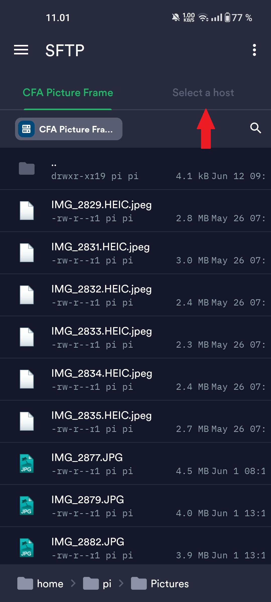

Termius guide:
Her er en guide til hvordan man uploader billeder fra en Android enhed til billed rammen, med Termius. For at uploade billeder, skal du være forbundet til et af skolens wifi. Billederne bliver først vist, efter at have genstartet
Setup guide
Tryk her hvis du allerede har appen installeret og sat op
Trin 1:
Gå til Termius på Play Store her, og installer appen
Trin 2:
Tryk på "Next", intil du er ved det sidste punkt
Trin 3:
Tryk på "Set up your vault"
Trin 4:
Tryk på "I don't want to back up my data"
Trin 5:
Tryk på menu baren
Trin 6:
Tryk på "SFTP"
Trin 7:
Tryk på "Local"
Trin 8:
Tryk på "Choose Different Directory"
Trin 9:
Find og tryk på din Billeder mappe
Trin 10:
Tryk på "USE THIS FOLDER"
Trin 11:
Tryk på "ALLOW"
Trin 12:
Tryk på "Select a host"
Trin 13:
Tryk på "Add SFTP server"
Trin 14:
For at forbinde til billed frammen, skal du indtaste disse informationer:
Alias: Giv den et navn
Hostname or IP Address: raspberrypi.local
Port: 22
Username: pi
Password: Password udleveres af Henrik
Tryk på fluebenet
Trin 15:
Tryk på din connection
Trin 16:
Tryk på "Continue"
Trin 17:
Tryk på "Pictures" mappen
Trin 18:
Tryk på "Local"
Trin 19:
Tryk på den mappe dine billeder er i
Trin 20:
Hold din finger nede på et billede du vil uploade, og så bare tryk på alle de andre billeder du vil uploade, når du har valgt dem, tryk på de tre prikker
Trin 21:
Tryk på "Transfer To", dine billeder burde nu blive uploaded

Upload guide
Tryk her for installations guide
Trin 1:
Åben Termius
Trin 2:
Tryk på menu baren
Trin 3:
Tryk på "SFTP"
Trin 4:
Tryk på din connection
Trin 5:
Tryk på "Pictures" mappen
Trin 6:
Tryk på "Select a host"
Trin 6:
Tryk på "Local"
Trin 6:
Tryk på Billeder mappen

Trin 6:
Tryk på den mappe dine billeder er i

Trin 7:
Hold din finger nede på et billede du vil uploade, og så bare tryk på alle de andre billeder du vil uploade, når du har valgt dem, tryk på de tre prikker

Trin 8:
Tryk på "Transfer To", dine billeder burde nu blive uploaded